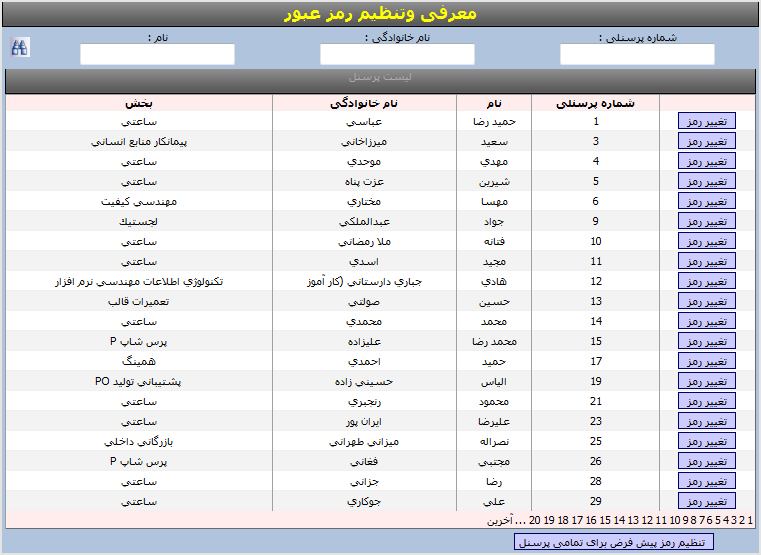
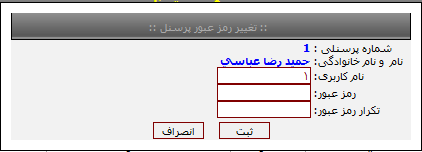

معرفی وتنظیم رمز عبور
امکانات قابل مشاهده دراین منو:

با کلیک نمودن کلیدتنظیم رمز پیش فرض برای تمامی پرسنل به صورت پیش فرض شماره پرسنلی تمامی پرسنل به عنوان نام کاربری و رمز عبور قرار می گیرد .
هر کاربر می تواند رمز عبور خود را تغییر دهد.
مطابق شکل با وارد نمودن نام کاربری و رمز عبور و تکرار رمز عبور تغییر رمز عبور پرسنل انجام می گردد.
